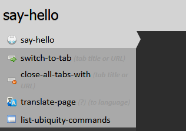
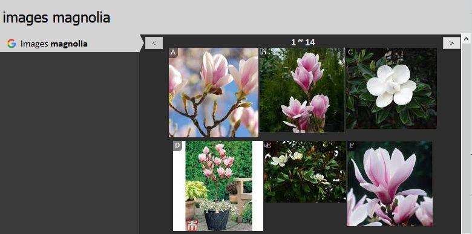

Authors: Aza Raskin, Blair McBride, Abimanyu Raja, Jono DiCarlo, Atul Varma, Gerrard Christensen
The great power of iShell - from a developer standpoint - is how easy it is to create commands. With only a couple of lines of Javascript, it enables even casual web developers to drastically enhance the features of the browser. This tutorial walks you through the process of being generative with iShell.
The rest of this page documents the command developer API which is implemented in iShell. See the iShell API Reference.
Note: iShell commands have access to the full browser WebExtension API and additionally jQuery. But you may still need to add necessary permissions in manifest.json and rebuild the addon if you need some features that are not covered by the existing addon permissions.
iShell doesn't require you to restart Firefox as you develop. Restarting is a drastic measure, and we want none of it. Instead, iShell reloads the commands every time it is summoned. When you are using the built-in editor then you don't even need to save!
To open the iShell command editor, summon iShell (Control+Space) and use the "edit-shell-commands" command.
Let's start with the standard programing trope: printing "Hello, World!".
In the command editor type the following:
cmdAPI.createCommand({
names: ["say-hello"],
uuid: "http://example.com/say-hello",
execute: function hello_execute() {
cmdAPI.notify("Hello, World!");
}
});
Now try executing "say hello". You'll see that "Hello, World!" is immediately displayed on the screen. If you are on Mac OSX with Growl installed the message will appear as a Growl notification. If you are on Windows, then it will appears as a standard "toaster" notification in the bottom right-hand corner of the screen.

iShell allows to employ the full strength of JavaScript classes
in command creation. Let's rewrite the
previous command in the object-oriented way. To accomplish this you don't need to use cmdAPI.createCommand.
Just declare a class:
/**
@uuid http://example.com/say-hello
*/
class SayHello {
execute() {
cmdAPI.notify("Hello, World!");
}
}
The name will be generated automatically. iShell will interpret any class in the command editor as a command,
unless its name starts with an underscore,
or it contains @noncommand annotation at the documentation comment above. Regular JavaScript comments are ignored.
Non-command classes may be used to for subclassing, bringing common functionality to multiple commands.
Object-oriented syntax also allows to significantly declutter the command code, because all noisy attributes are moved to the documentation comment and command class may only contain fields and functions related to its purpose. Explore templates in the command editor for more details.
cmdAPI is a namespace which contains all the functions you need to create commands.
Commands are created by making an object and passing it to cmdAPI.createCommand. In
Javascript, inline curly braces stands for object literal, so this code:
{
names: ["say-hello"],
uuid: "http://example.com/say-hello",
execute: function () { //etc }
}
means "Make an object with three attributes, 'names', 'uuid' and 'execute'." This object is then passed as the
argument to cmdAPI.createCommand.
'names', 'uuid' and 'execute' are the only mandatory attributes for your command object. 'names' specifies
what the command is called, 'uuid' - is a globally (presumably) unique identifier of the command, and 'execute'
specifies what it does. There are plenty of other attributes that you can specify, but they are all optional.
'names' is always an array (thus the square brackets). In the case of this command we provided only one name, "hello world". But we could have provided as many names as we wanted. For instance, if we had said:
names: ["say-hello", "greet"]
then "say-hello" would be the normal name of the command, but iShell would also recognize "greet" as a synonym or alias for the command.
'uuid' may be an arbitrary unique string, for example, the homepage URL of a command. An RFC 4122 v4 complaint UUID is generated automatically for commands added through command editor templates. In the examples below we omit this attribute for brevity.
'execute' is always a function. When the user executes your command, this is the function that will be run. It can do pretty much anything you want - or at least, anything you know how to write in JavaScript.
In the example above, we simply call cmdAPI.notify(), which displays the given message in
whichever way the operating system can.
There are a number of other useful functions in the cmdAPI namespace. For
more detailed information, take a look at the iShell API Reference.

Let's add a preview to our new command. Previews give the user feedback about what a command does before it's executed. Previews are great for providing rich visual feedback like displaying search results when using the images command as shown above. Previews have the full expressive power of HTML, including animations, so there's a lot you can do with them.
One point of design: Preview code should never have side-effects. That is, a preview should never (without user interaction) change the state of the system.
For the "say-hello" command, we don't need anything fancy: just some help text that is more descriptive than the default "Executes the say hello command."
cmdAPI.createCommand({
names: ["say-hello", "greet"],
preview: "Displays a <i>salutary</i> greeting to the planet.",
execute: function hello_execute() {
cmdAPI.notify("Hello, World!");
}
})
Here the preview is an HTML-formatted string. The preview can also be a function. We'll get to that in the next section.
I often forget what day it is. That may be because I need to go outside more often, but, like any programmer, I generally solve my problem's symptoms with technology rather then addressing the root cause. My solution is to create a command that inserts the date at the location of the cursor.
cmdAPI.createCommand({
names: ["insert-date"],
execute: function date_execute() {
cmdAPI.setSelection(new Date().toLocaleDateString());
}
})
The new function here is setSelection(). This inserts the passed-in text onto the page at
the location of the cursor. If the cursor is in an editable text or rich-text fields, the text gets
dumped there. If the cursor isn't in an editable area, setSelection() will still be able to
insert the date. (Even when it isn't displayed, Firefox always keeps track of a cursor position. To see
it, type F7.) Try going to a page, selecting some non-mutable text, and using the command. See, it
works! This is particularly useful for commands like "translate", where you want to replace non-editable
text with its translation.
The toLocaleDateString() function is native to Javascript, so if you're not familiar with it
check out the documentation for the Javascript Date
object.
It's time to add a better preview to the date command. Let's have the preview show the date, so that the user will know what to expect when they execute the command. (As a side benefit the user doesn't even need to execute the command to do a quick check of the day.)
cmdAPI.createCommand({
names: ["insert-date"],
_date: function date__date() {
return new Date().toLocaleDateString();
},
preview: function date_preview(pblock) {
var msg = _('Inserts today\'s date: "<i>${date}</i>"');
pblock.innerHTML = cmdAPI.renderTemplate(msg, {date: this._date()});
},
execute: function date_execute() {
cmdAPI.setSelection(this._date());
}
})
We've done three things here. The first was to factor out the code for getting the date into the _date()
function. This way we don't break DRY
by repeating code across the preview and execute functions. Notice that to access the
_date(), we use the this keyword.
The second thing we've done is to add a preview function. The first argument is the DOM element that gets
displayed as the preview for your command. Modify pblock and you modify the preview. In
this case, we set the innerHTML of the preview block to be the message we want.
The third thing we've done is to do some string formatting using the renderTemplate()
function. This takes a template string and performs the appropriate substitution given the passed-in
JSON object. Templates can handle a wide range of functionality, as we are currently using TrimPath's JavascriptTemplates.
Although JavascriptTemplates has some nice features, such as ${for}, in the most cases it is more
convenient to use ES6 template literals (``) nowadays.
Note how in the code above, we used the localization wrapper _() before passing the string
to renderTemplate. Because this is such a very common combination when displaying strings, we have a
shortcut for it. Calling _() with a JSON object as the second argument will automatically trigger cmdAPI.renderTemplate()
on the post-localization string. So the above preview method could be rewritten more simply as:
preview: function date_preview(pblock) {
var msg = 'Inserts today's date: "<i>${date}</i>"';
pblock.innerHTML = _(msg, {date: this._date()});
},
Previews display something meaningful to the user immediately. If you have a preview that requires an AJAX request - say, to fetch some search results - that call might take a while to return. In the meantime, your command should display a placeholder preview giving the user feedback.
preview: function(pblock) {
pblock.innerHTML = "This will show until the AJAX request returns";
cmdAPI.previewAjax(pblock, "http://example.com", function (htm) {
pblock.innerHTML = htm;
});
},
Before you share your command with the world, you should consider adding some attributions to the code:
cmdAPI.createCommand({
names: ["insert-date"],
homepage: "http://azarask.in/",
author: { name: "Aza Raskin", email: "aza@mozilla.com"},
contributors: ["Atul Varma"],
license: "MPL",
/* THE REST OF THE CODE HERE */
})
And you should definitely add some documentation:
cmdAPI.createCommand({
names: ["insert-date"],
homepage: "http://azarask.in/",
author: { name: "Aza Raskin", email: "aza@mozilla.com"},
contributors: ["Atul Varma"],
license: "MPL",
description: "Inserts today's date.",
help: "If you're in an editable text area, inserts today's date, formatted for the current locale.",
/* THE REST OF THE CODE HERE */
})
The .description and .help attributes are both automatically displayed
alongside your command's name on the command-list page. (The user can get to this page at any time by
issuing the "list-shell-commands" command.) HTML tags can be used in both of these strings.
Description is a one-line summary of what the command does, while Help is a longer description that can include examples, caveats, and so on. If your command is simple enough that all you have to say about it fits in one line, it's OK to use a description alone and leave out the help.
In the object-oriented syntax you put these attributes as annotations to the command documentation comment, except the "help" attribute. Command help will be generated from the entire comment text (which may contain HTML), annotations excluded.
Let's start by making a simple command to echo back whatever you type.
cmdAPI.createCommand({
names: ["echo"],
arguments: [{role: "object",
nountype: noun_arb_text,
label: "your shout"}],
preview: function previewEcho(pblock, args) {
pblock.innerHTML = "Will echo: " + args.object.text;
},
execute: function executeEcho(args) {
var msg = args.object.text + "... " + args.object.text + "......";
cmdAPI.notify(msg);
},
});
This says that the command "echo" takes one argument which is arbitrary text. Whatever text the user enters will get wrapped in an input object and passed into both the preview and execute function.
Try it! Run "echo hellooooo" and watch what happens.
iShell takes care of parsing the user's input, so you don't need to worry about handling prounoun substitution or any of the other natural-language-like features of the iShell parser. Try selecting some text on a page, and run "echo this". iShell should now echo the selected text.
Note that we gave three pieces of information when defining our argument: its role, its nountype, and its label. The label is the easiest part: It's just whatever text you want to have appear in the iShell interface as a prompt for the user. E.g, if you run "echo", you will see the label for the argument:
echo (your shout)
The roles and the nountypes require some more explanation. We'll cover each of them in detail next.
Your command can take multiple arguments. Each one is identified by a "role". To understand roles, it helps to think of your command name as a verb, and each argument as a noun. Remember that iShell's command line is a pseudo-natural-language environment, so it attempts to be as close to natural language grammar as possible.
For example, if you've ever used the email command, you know that it takes up to two
arguments: a message and a person.
email message email to person email message to person email to person message
In grammatical terms, the message argument is the "direct object" of the verb "email". The person argument is an indirect object. We call it the "goal" of the verb. So if we were writing the email command, we'd define the arguments like this:
arguments: [{role: "object",
nountype: noun_arb_text,
label: "message"},
{role: "goal",
nountype: noun_type_contact,
label: "recipient"}]
Because we give the recipient argument the "goal" role, the iShell parser knows to expect the user to type the word "to". When the user enters "email hello to Aza", the parser knows that the word following "to" - that is, "Aza" - should be assigned to the recipient argument.
In our simple "echo" command, we expect the user to type "echo hellooooo" or something like that. The "hellooooo" is the direct object of the verb "echo", so we give it the "object" role.
"Object" is the most common role. If a command takes only one argument, that argument is usually an "object".
When your execute method is called, it is passed a single object that encapsulates the values for all arguments.
When your preview method is called, it is passed this object, too.
The object has one attribute corresponding to each role. In our example above, the command accepts
only
an object-role argument, so the preview and execute methods get passed an argument with an args.object
attribute.
If we made a command, like email, that takes an object-role argument and a goal-role argument, its
preview and execute methods would get passed an argument with args.object and args.goal.
args.object (or args.goal) has several attributes of its own:
args.object.text // a string of the input in plain text, without formatting args.object.html // a string of the input in formatted HTML, including tags args.object.data // for non-text input types, an arbitrary data object args.object.summary // the HTML string displayed in the suggestion list, abbreviated if long
Our example command only cares about the .text attribute of the input, because it simply
wants plain text. Often, when the user invokes your command by typing a few short words into the
input
box, .text, .html, and .summary will all have exactly the
same
value, and .data will be null. Many, if not most, commands that you write will only
care
about the text value. Nevertheless, the other versions of the input data are provided to you in case
they differ from .text and in case your command has a use for them.
Now you know more about commands and arguments, so we can create a more complex object-oriented command with arguments.
Let's call it show-text. It will have the following syntax: show-text message text in destination.
/**
Displays a given message at popup or prints it to the browser log.
@description An object-oriented command with arguments.
*/
class ShowText {
constructor(args) {
args[OBJECT] = {nountype: noun_arb_text, label: "message"};
args[IN] = {nountype: ["popup", "log"], label: "destination"};
}
preview(args, display) {
let html = `Shows <i>${args[OBJECT]?.text}</i> in <b>${args[IN]?.text || "popup"}</b>`;
display.set(html);
}
execute(args) {
let destination = args[IN]?.text;
let message = args[OBJECT]?.text;
if (destination === "log")
console.log(message);
else
cmdAPI.notify(message);
}
}
The content of the documentation comment above the class (except annotations) is displayed at the help section of the iShell command listing. The command defines a nameless object argument in its constructor, along with a prepositional argument in which can take two values: popup and log. These values will be available to autocompletion. With the object-oriented syntax you do not need to remember obscure argument role names and just use the names of arguments themselves when defining them in the constructor or accessing in methods (although you may access them in the old way if you prefer). Please do not use the command constructor for any purposes other than argument definition, since iShell may create the command object multiple times for various reasons. There are several other functions for command initialization.
You may also notice that object-oriented methods have the args argument always in the first position,
and pblock argument is now called display. It still contains a reference to the same div element
of iShell preview area, but has a new nice set method which sets element's innerHTML property for you.
Noun types specify what kind of input your command can accept for each one of its arguments.
For the "echo" command, we wanted the object-role argument to accept any text whatsoever, so for its
nountype we passed in the predefined noun_arb_text object. This object accepts any
arbitrary text as a valid argument and passes it to the command unchanged.
Note: unexpected things may happen if a command contains more than one argument of this type.
This is OK for very simple commands, like echoing back the user's input. But for commands that take structured data, you will want to use more specific nountypes.
For example, if a command can take a date (like the "check calendar" command), you would want to use
noun_type_date as the nountype of the argument. noun_type_date provides
several benefits to your command: it does all of the date parsing for you; it suggests dates that
the
user might want to enter (for instance, it defaults to today's date). And, it lets the parser know
that
your command takes a date. This is useful because when the user selects a date on a page and invokes
iShell, your command - along with "check calendar" - will be one of the top suggestions.
You can write your own noun types - we'll get into that later. For now, let's take a look at the built-in nountypes that your command can use. These include:
Once you are familiar with writing commands, you should check out the nountypes.js at the addon source code,
which has the implementation for most of the noun-types.
If none of the nountypes above is what you're looking for, there are several ways to define your own. The simplest is to use a regular expression. Suppose that (for whatever odd reason) you wanted your command to accept only arguments that begin with the letter N. The following regexp matches words that start with N:
/^[nN]/
You could use it as a noun type, like so:
arguments: [{role: "object",
nountype: /^[nN]/,
label: "word that starts with n"}]
(Note that you do not put quotes around the regexp.)
A regexp nountype will reject input that doesn't match, but it doesn't know how to help the user by suggesting appropriate input.
Suppose you're writing a command that takes a color as an argument (perhaps it outputs a hexadecimal RGB representation of that color.) To make a nountype that accepts colors, you can simply pass in an array of strings:
names: ["convert-color"],
arguments: [{role: "object",
nountype: ["red", "orange", "yellow", "green",
"blue", "violet", "black", "white",
"grey", "brown", "beige", "magenta",
"cerulean", "puce"],
label: "color to convert"}]
One benefit of using a list is that the parser can use it offer the user suggestions. If the user
enters
"get-color bl", for instance, iShell will be able to suggest "black" and "blue" as the two valid
completions based on the input. This makes list-based nountypes very useful for any command that can
accept only a finite set of values.
Of course, not every type of noun you'd be interested in can be represented
as a finite list or as a regexp. If you want to be able to accept or reject input based on some
algorithmic test, you can do so by writing a custom JavaScript object that implements a
suggest() method (and, optionally, a default() method.)
There is an example of how to do this in the section on the tab commands, below.
Let's take a look at one of the built-in noun-types: noun_type_contact. By using the
noun-type, iShell will also
autocomplete to known people while the user is entering the command. This is what the built-in
iShell
command "email" uses. At the moment, iShell figures out what people you know just by remembering
emails you have ever passed
to the email or compose commands.
Enough rambling. It's time for a command. I constantly find that I need to fetch someone's email address to paste into a text field because I don't know it off-hand. This command solves that by letting you insert someone's email address using autocomplete.
cmdAPI.createCommand({
name: "insert-email",
arguments: {modifier: noun_type_contact},
preview: "Inserts someone's email address by name.",
execute: function(args) {
cmdAPI.setSelection(args.modifier.html);
},
});
To try this out, execute "insert-email of " and then the first few letters of someone you mailed through the commands mentioned above.
Notice that we used a shortcut for declaring the arguments. In the long form, we would have had to say:
arguments: [{role: "modifier",
nountype: noun_type_contact,
label: "contact"}]
but if we don't care about specifying extra parameters for the argument, we can get away with using a single object for "arguments", with the roles as the property names, and the nountypes as the property values:
arguments: {modifier: noun_type_contact}
or with label using "_" (or " ") as separator:
arguments: {modifier_contact: noun_type_contact}
If we had several arguments, we could say:
arguments: {object: noun_arb_text, modifier: noun_type_contact}
Finally, if you only have "object" and don't need to specify a label...:
argument: noun_arb_text
iShell increases the surface area of innovation for the browser many-fold, by making anyone who can write simple Javascript into an agent for bettering the browser and the open Web.
Often while writing emails, I'll discover that I've pasted in a URL long enough to be used for unfortunate analogies. I'd like to be able to quickly turn that into a TinyURL - but the process of making a TinyURL involves lots of fiddly steps. iShell to the rescue.
Because we include jQuery with iShell, it is simple to perform Ajax calls as well as parse returning data. TinyUrl.com provides an easy to use RESTful API where you pass a URL and it returns its shortened form. We use that API in this command.
cmdAPI.createCommand({
names: ["tinyurl"],
description: "Replaces the selected URL with a TinyUrl.",
arguments: [{role: "object",
nountype: noun_arb_text,
label: "url to shorten"}],
execute: function(args) {
var baseUrl = "http://tinyurl.com/api-create.php";
var params = {url: args.object.text};
jQuery.get(baseUrl, params, function(tinyUrl) {
cmdAPI.setSelection(tinyUrl);
});
},
})
jQuery is a powerful tool. With it, you can fairly effortlessly cherry-pick the data you need from RSS feeds, XML, and all sorts of other data formats. It also makes doing in-preview animations a breeze.
The final command in this tutorial is for switching between tabs. The end goal is this: type a few keys to that matches the title of an open tab (in any window), hit return, and you've switched to that tab.
We'll write this command in two steps. The first step is creating a tab noun-type. The second step is using that noun-type to create the tab-switching command.
A noun-type needs to only have two things: A label and a suggest()
function. It
can optionally also have a default() function.
The label is what shows up when the command prompts for input. Suggest returns a list of input objects, each one containing the name of a matching tab.
var noun_type_browser_tab = {
label: "tab title or URL",
_searchTabs(text, maxResults, callback) {
let matcher = new RegExp(text, "i");
chrome.tabs.query({}, tabs => {
let results = [];
for (let tab of tabs) {
let match = matcher.exec(tab.title) || matcher.exec(tab.url);
if (!match) continue;
tab.match = match;
results.push(tab);
if (maxResults && results.length >= maxResults) break;
}
callback(results);
});
},
suggest: function(text, html, callback, selectedIndices) {
this._searchTabs(text, 5, tabs => {
callback(tabs.map(tab =>
cmdAPI.makeSugg(
tab.title || tab.url,
null, tab, cmdAPI.matchScore(tab.match), selectedIndices)));
});
return []; // normally, we should return suggestions here, but our noun type is asynchronous
}
};
The suggest method of a noun type always gets passed both text and html. If the input is coming from a part of a web page that the user has selected, these values can be different: they are both strings, but the html value contains markup tags while the text value does not. The Tab noun type only cares about the plain text of the tab name, so we ignore the value of html.
The callback argument is for use by nountypes that need to run asynchronously, i.e. because they need to do network calls to generate suggestions. The callback is a function; instead of returning a list of suggestions right away, an asynchronous noun type can call the callback with each suggestion it generates.
We use the convenience function cmdAPI.makeSugg() to generate an
input object of the type that the iShell parser expects. The full signature of this function is:
cmdAPI.makeSugg(text, html, data, score, selectionIndices);
It requires at least one of text, html, data. Use
null if you want to skip text and/or html.
If the text or html input is very long, makeSugg() generates a summary for us, and puts
it
in the summary attribute of the input object.
We could have accomplished mostly the same thing without calling makeSugg() by returning
a
list of anonymous objects like these:
{ text: tabName,
html: Utils.escapeHtml(tabName),
data: tab,
summary: Utils.escapeHtml(tabName) };
The input objects that our suggest() method generates are the same objects that will
eventually get passed in to the execute() and preview() methods of any
commands that use this noun type.
Now that we are armed with the tab noun-type, it is easy to make the tab-switching command. Again, we use FUEL to focus the selected tab.
cmdAPI.createCommand({
names: ["switch-tab"],
arguments: {object: noun_type_browser_tab},
execute: function tab_execute(args) {
let tab = args.object.data;
chrome.tabs.update(tab.id, {active: true});
},
preview: function tab_preview(pblock, args) {
var tabName = args.object.text;
if (tabName)
pblock.innerHTML = `Changes to <strong>${tabName}</strong> tab.`;
else
pblock.innerHTML = "Switch to a tab by name.";
}
});
You now know all you need to know to get started developing useful iShell commands of your own.
Here are some miscellaneous tips that didn't fit elsewhere on this page, that may make development easier for you.
There are two additional command properties may be set in cmdAPI.createCommand for that purposes:
Some commands may want to store data that persist even after closing Firefox.
Meet the Bin interface:
let gId = 42; // used to avoid needless preview updates when typing
cmdAPI.createCommand({
name: "memo",
uuid: "FA6A3460-E825-4CFA-A24F-5908131D29FD",
description: "Lets you jot a memo for the page.",
author: "satyr",
argument: noun_arb_text,
execute: function({object: {html}}, Bin) {
let href = cmdAPI.getLocation();
let list = Bin.href() || [];
list.push(html);
Bin.href(list);
gId = +new Date;
},
preview: function(pb, _, Bin) {
let href = cmdAPI.getLocation();
let list = Bin.href();
if (!list) {
pb.innerHTML =
`No memos taken for: <small><code>${href}</code></small>`;
return;
}
if ($("ol[data-id='" + gId + "']").length > 0) return;
let ol = cmdAPI.previewList(pb, list, function deleteMemo(i, ev) {
$(ev.target).closest("li").slideUp();
list.splice(i, 1);
Bin.href(list.length ? list : null);
gId = +new Date;
});
ol.setAttribute("data-id", gId);
},
});
Authors: Aza Raskin, Blair McBride, Abimanyu Raja, Jono DiCarlo, Atul Varma, Gerrard Christensen